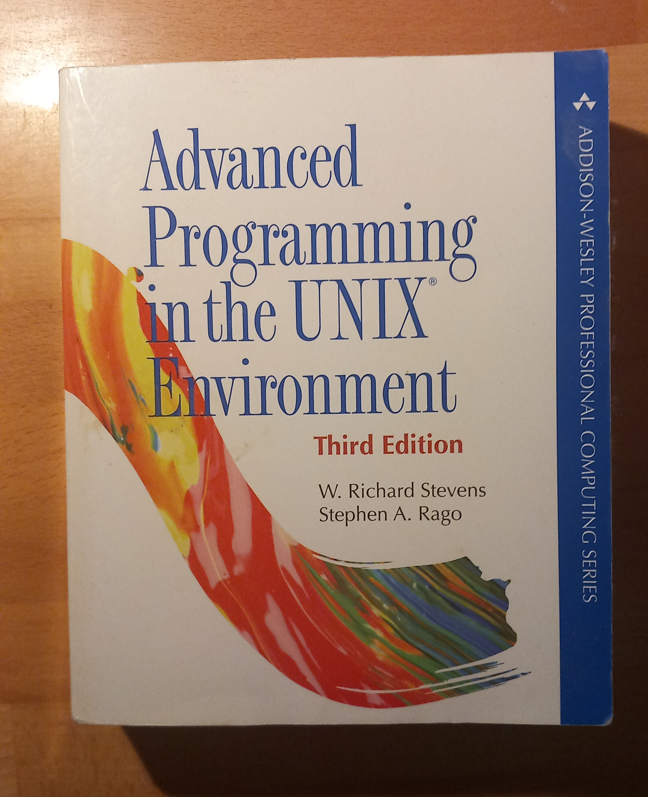

Giovanni's Diary > Subjects > Programming > Notes >
Advanced Programming in the Unix Environment
I have somehow grown attached to this book. It set in front of me as a base for my monitor for many years, so I am used to having it around. Maybe I just want some UNIX influence every day.

Figure 1: The book
Even if I understood nothing after reading the book when I was in high school, it was the first technical book I have ever read and it introduced me to UNIX.
If you want to learn about operating systems, I would rather suggest the latest edition of "Modern Operating Systems" by Andrew Tanenbaum. It introduces well all the concepts of operating systems and it is a great read full of jokes.
Advanced Programming in the Unix Environment (APUE) does not focus so much on how to make operating systems, instead it explains how UNIX systems work following the POSIX standards: how do permission works, how about file descriptors or processes, how singnals work in POSIX, etc.
The book is a great reference for UNIX systems, with many examples, exercises and historical clarifications. For a more diluted version I would suggest "The Unix Programming Environment Book" by Brian Kernighan, which focuses on the user interface with the system. APUE goes a level deeper and explains how it all works under the hood.
The topics discussed are the following:
- UNIX standardization
- file I/O
- files and directories
- standard I/O library
- system files
- process environment
- process control (fork, etc…)
- process relationships (groups, logins…)
- signals
- threads
- thread control
- daemon processes
- advanced I/O
- interprocess communication
- network sockets
- advanced IPC
- terminal I/O
- pseudo terminal
The book ends with a sample of a printer driver in 48 pages (literally, there are 48 pages of code).
I will read it again when I will implement my own UNIX operating system.
Travel: Programming Notes, Index